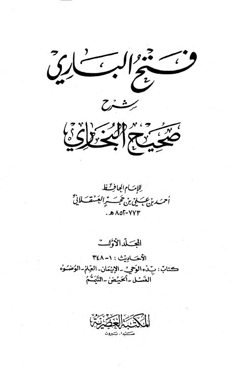

Downloads need an internet connection.
فتح الباري شرح صحيح البخاري- العصرية
Authors: أحمد بن علي بن حجر العسقلاني
Editors: عبد العزيز بن عبد الله بن باز محمد فؤاد عبد الباقي
Publishers: المكتبة العصرية
**▫️ العنوان: فتح الباري شرح صحيح البخاري- العصرية** ▪️ المؤلف: #أحمد_بن_علي_بن_حجر_العسقلاني ▫️ المحقق: #عبد_العزيز_بن_عبد_الله_بن_باز • #محمد_فؤاد_عبد_الباقي ▪️ الناشر: #المكتبة_العصرية ▫️ تاريخ النشر: 1423هـ 2002م ▪️ بلد النشر: صيدا، #لبنان • بيروت ▫️ الطبعة: 1 ▪️ عدد الأجزاء: 3 ▫️ الصفحات: 2104 ▪️ نوع الوعاء: #كتاب ▫️ التصنيف الرئيسي: #الحديث_وعلومه ▪️ التصنيف الفرعي: #الكتب_الستة ۪